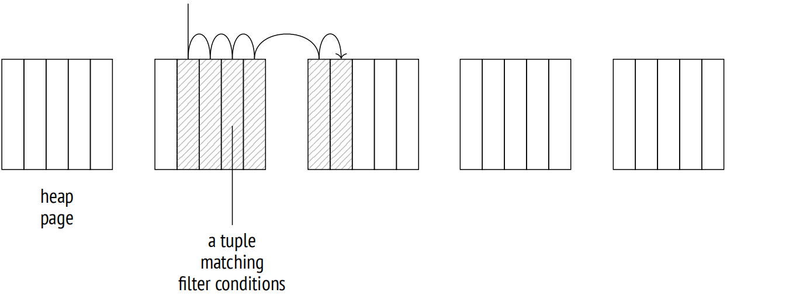
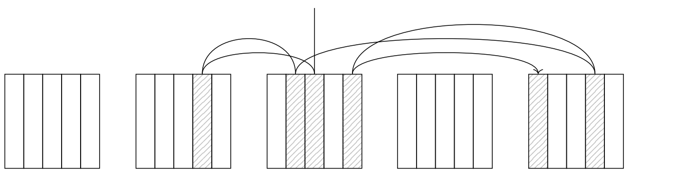
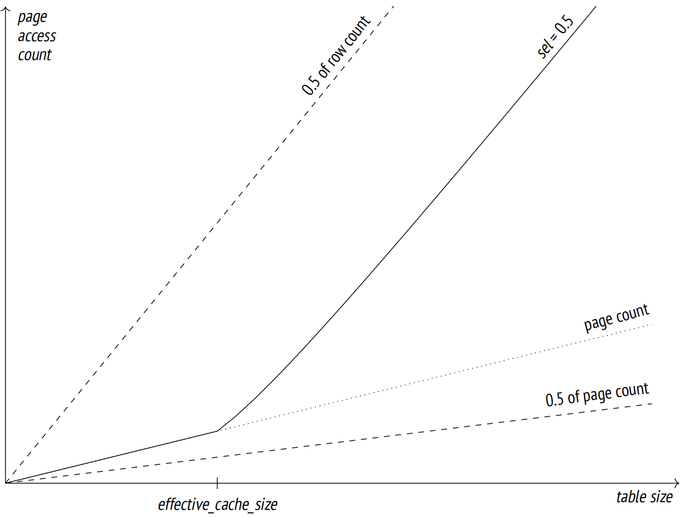
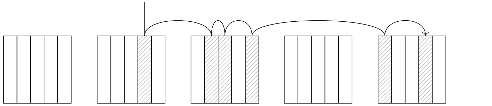
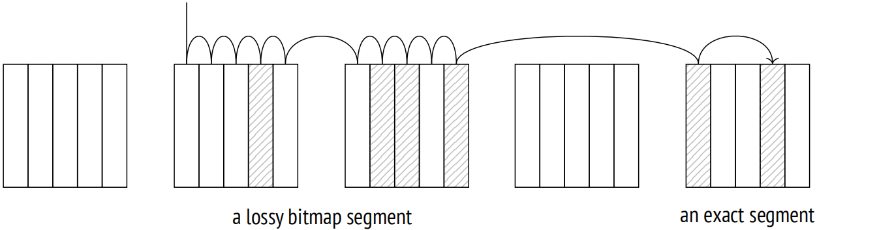
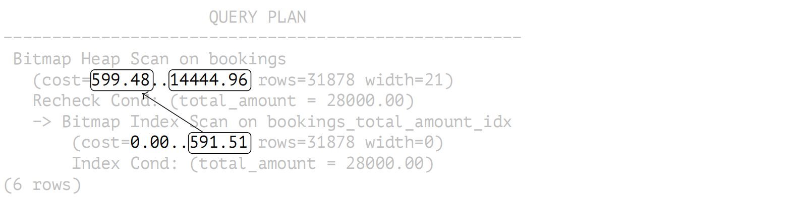
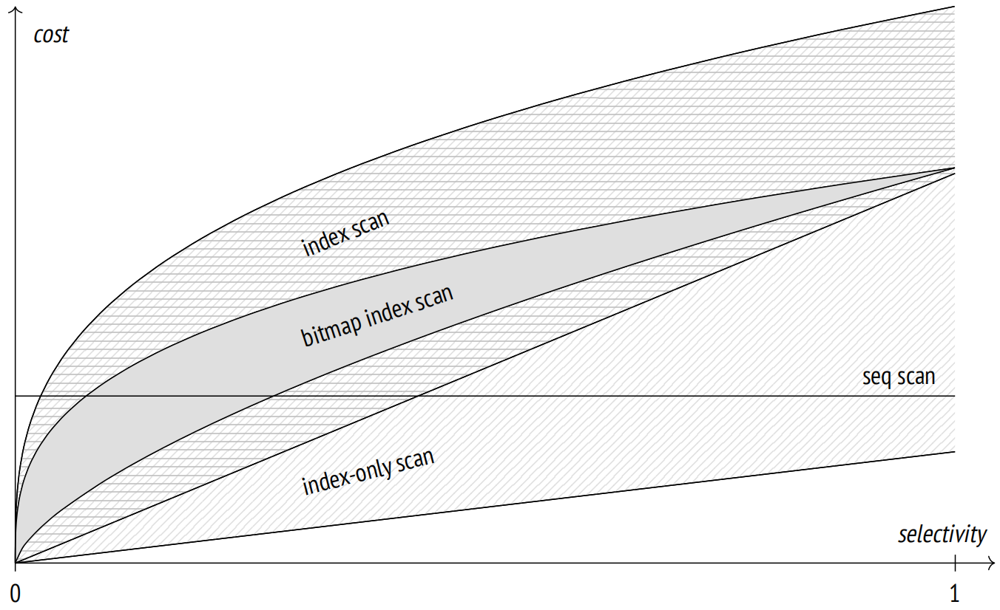

第 20 章：索引扫描
20.1 常规索引扫描
索引提供了两种基本的访问 TIDS 的方式。第一种是执行索引扫描。大多数索引访问方法 (但不是全部) 都具有 INDEX SCAN 属性以支持这种操作。
索引扫描在计划中由 Index Scan 1 节点表示：
=> EXPLAIN SELECT * FROM bookings
WHERE book_ref = '9AC0C6' AND total_amount = 48500.00;
QUERY PLAN
−−−−−−−−−−−−−−−−−−−−−−−−−−−−−−−−−−−−−−−−−−−−−
Index Scan using bookings_pkey on bookings
(cost=0.43..8.45 rows=1 width=21)
Index Cond: (book_ref = '9AC0C6'::bpchar)
Filter: (total_amount = 48500.00)
(4 rows)索引扫描期间，访问方法逐个返回 TIDS 2。接收到 TID 之后，索引引擎访问此 TID 引用的堆页面，获取相应的元组，如果满足可见性规则，则返回所请求的该元组相关字段。这个过程会持续进行，直到访问方法没有更多匹配查询的 TIDS 为止。
Index Cond 行仅包括可以使用索引检查的过滤条件。其他需要根据堆重新检查的条件将在 Filter 行中单独列出。
如本例所示，索引和堆访问操作均由一个共同的 Index Scan 节点处理，而不是由两个不同的节点处理。但是，还有一个单独的 Tid Scan 节点 3，如果提前知道元组 ID，便可从堆中获取元组：
=> EXPLAIN SELECT * FROM bookings WHERE ctid = '(0,1)'::tid;
QUERY PLAN
−−−−−−−−−−−−−−−−−−−−−−−−−−−−−−−−−−−−−−−−−−−−−−−−−−−−−−−−−
Tid Scan on bookings (cost=0.00..4.01 rows=1 width=21)
TID Cond: (ctid = '(0,1)'::tid)
(2 rows)20.1.1 成本估算
索引扫描的成本估算包括索引访问操作和堆页面读取的预估成本。
显然，索引相关的估算部分完全取决于特定的访问方法。对于 B 树，成本主要由获取索引页和处理其条目所产生。要读取的页数和行数可以通过数据总量和应用的过滤条件的选择率来确定。索引页是随机访问的 (在逻辑结构上相邻的页面在磁盘上是物理分散的) 。从根节点到叶节点并计算所有需要的表达式所花费的 CPU 资源进一步增加了预估成本。4
堆相关部分的估算包括堆页面访问的成本和处理所有获取的元组所需的 CPU 时间。需要注意的是，I/O 估算取决于索引扫描的选择率以及磁盘上元组的物理顺序与访问方法返回其 ID 的顺序之间的相关性。
20.1.2 良好场景：高相关性
如果元组在磁盘上的物理顺序与索引中 TIDS 的逻辑顺序完美相关，那么每个页面只会被访问一次：Index Scan 节点将顺序地从一个页面跳到另一个页面，逐个读取元组。

PostgreSQL 会收集相关性的统计信息：
=> SELECT attname, correlation
FROM pg_stats WHERE tablename = 'bookings'
ORDER BY abs(correlation) DESC;
attname | correlation
−−−−−−−−−−−−−−+−−−−−−−−−−−−−−
book_ref | 1
total_amount | 0.0026738467
book_date | 8.02188e−05
(3 rows)如果相应的绝对值接近于 1，那么相关性很高 (如 book_ref 的情况)；接近于零的值表示数据分布是混乱的。
在这个特定例子中，book_ref 列的高相关性当然是因为数据是基于该列升序加载到表中的，并且还没有更新。如果我们对这一列上创建的索引执行 CLUSTER 命令，我们也会看到相同的结果。
但是，完美的相关性并不能保证所有的查询都将按照 book_ref 值的升序返回结果。首先，任何更新都会将生成的元组移动到表的末尾。其次，依赖于其他列的索引扫描的计划将以不同的顺序返回结果。即使是顺序扫描也可能不从表的开头开始。因此，如果你需要特定的顺序，你应该在 ORDER BY 子句中明确定义它。
此处是一个处理大量行的索引扫描示例：
=> EXPLAIN SELECT * FROM bookings WHERE book_ref < '100000';
QUERY PLAN
−−−−−−−−−−−−−−−−−−−−−−−−−−−−−−−−−−−−−−−−−−−−−
Index Scan using bookings_pkey on bookings
(cost=0.43..4638.91 rows=132999 width=21)
Index Cond: (book_ref < '100000'::bpchar)
(3 rows)条件的选择率估算结果如下：
=> SELECT round(132999::numeric/reltuples::numeric, 4)
FROM pg_class WHERE relname = 'bookings';
round
−−−−−−−−
0.0630
(1 row)这个值接近 1/16，我们可以根据 book_ref 值的范围是从 000000 到 FFFFFF 猜到。
对于 B 树，I/O 成本估算中与索引相关的部分包括读取所有所需页面的成本。任何满足 B 树支持条件的索引条目均存储在有序列表的页面中，因此要读取的索引页面数量按索引大小乘以选择率进行估算。但由于这些页面物理上并不有序，因此以随机模式读取页面。
CPU 资源用于处理所有读取的索引条目 (处理单个条目的成本按 cpu_index_tuple_cost 估算) 和计算每个条目的条件 (在本例中，条件包含单个运算符；其成本按 cpu_operator_cost 估算）。
表访问视为顺序读取所需的页面。在完美相关性的情况下，堆元组在磁盘上连续存储，因此页面数量按表的大小乘以选择率进行估算。
元组处理产生的开销会进一步增大 I/O 成本；按每条元组花费 cpu_tuple_cost 进行估算。
=> WITH costs(idx_cost, tbl_cost) AS (
SELECT
(
SELECT round(
current_setting('random_page_cost')::real * pages +
current_setting('cpu_index_tuple_cost')::real * tuples +
current_setting('cpu_operator_cost')::real * tuples
)
FROM (
SELECT relpages * 0.0630 AS pages, reltuples * 0.0630 AS tuples
FROM pg_class WHERE relname = 'bookings_pkey'
) c
),
(
SELECT round(
current_setting('seq_page_cost')::real * pages +
current_setting('cpu_tuple_cost')::real * tuples
)
FROM (
SELECT relpages * 0.0630 AS pages, reltuples * 0.0630 AS tuples
FROM pg_class WHERE relname = 'bookings'
) c
)
)
SELECT idx_cost, tbl_cost, idx_cost + tbl_cost AS total
FROM costs;
idx_cost | tbl_cost | total
−−−−−−−−−−+−−−−−−−−−−+−−−−−−−
2457 | 2177 | 4634
(1 row)这些计算说明了成本估算背后的逻辑，因此结果与规划器提供的估算一致，即使是近似值。获得准确值将需要考虑其他细节，这些我们在这里不讨论。
20.1.3 不良场景：低相关性
如果相关性低，一切都变了。让我们在 book_date 列上创建一个索引，该列与这个索引的相关性几乎为零，然后观察一下获取与前一个示例中几乎相同比例行的查询。索引访问的成本太高，以至于规划器只有在其他所有可替代的方案都被明确禁止的情况下才会选择索引扫描：
=> CREATE INDEX ON bookings(book_date);
=> SET enable_seqscan = off;
=> SET enable_bitmapscan = off;
=> EXPLAIN SELECT * FROM bookings
WHERE book_date < '2016-08-23 12:00:00+03';
QUERY PLAN
−−−−−−−−−−−−−−−−−−−−−−−−−−−−−−−−−−−−−−−−−−−−−−−−−−−−−−−−−−−−−−−−−−−−−
Index Scan using bookings_book_date_idx on bookings
(cost=0.43..56957.48 rows=132403 width=21)
Index Cond: (book_date < '2016−08−23 12:00:00+03'::timestamp w...
(3 rows)问题在于，低相关性增加了访问方法返回的下一个元组位于不同页面的可能性。因此，Index Scan 节点必须在页面之间跳转，而不是顺序读取它们；在最坏的情况下，访问的页面数量会达到获取的元组数量。

然而，我们不能简单地将良好场景的计算中的 seq_page_cost 替换为 random_page_cost，relpages 替换为 reltuples。我们在计划中看到的成本远低于我们按这种方式估算的值：
=> WITH costs(idx_cost, tbl_cost) AS (
SELECT
( SELECT round(
current_setting('random_page_cost')::real * pages +
current_setting('cpu_index_tuple_cost')::real * tuples +
current_setting('cpu_operator_cost')::real * tuples
)
FROM (
SELECT relpages * 0.0630 AS pages, reltuples * 0.0630 AS tuples
FROM pg_class WHERE relname = 'bookings_pkey'
) c
),
( SELECT round(
current_setting('random_page_cost')::real * tuples +
current_setting('cpu_tuple_cost')::real * tuples
)
FROM (
SELECT relpages * 0.0630 AS pages, reltuples * 0.0630 AS tuples
FROM pg_class WHERE relname = 'bookings'
) c
)
)
SELECT idx_cost, tbl_cost, idx_cost + tbl_cost AS total FROM costs;
idx_cost | tbl_cost | total
−−−−−−−−−−+−−−−−−−−−−+−−−−−−−−
2457 | 533330 | 535787
(1 row)原因是代价模型考虑了缓存。频繁使用的页面保存在缓冲区缓存 (和操作系统缓存) 中，因此缓存大小越大，在其中找到所需页面的机会就越大，从而避免了额外的磁盘访问操作。出于规划目的，缓存大小由 effective_cache_size 参数定义。值越小，预估读取的页面就越多。
下图 (见图 20.3) 展示了要读取的页面数量预估值与表大小之间的依赖关系 (对于选择率为 1/2 且页面包含 10 行的情况) 5。虚线显示了最佳情况下的访问计数 (如果相关性完美，则为页面计数的一半) 和最坏情况下的访问计数 (如果相关性为零且没有缓存，则为行计数的一半) 。

effective_cache_size 值表示可用于缓存的内存总量 (包括 PostgreSQL 缓冲区缓存和操作系统缓存)。但由于该参数仅用于估算目的，并不会影响到内存分配本身，因此在更改此设置时，不必考虑实际数字。
如果将 effective_cache_size 减少到最小，计划的估算结果将接近上述无缓存情况的低端值：
=> SET effective_cache_size = '8kB';
=> EXPLAIN SELECT * FROM bookings
WHERE book_date < '2016-08-23 12:00:00+03';
QUERY PLAN
−−−−−−−−−−−−−−−−−−−−−−−−−−−−−−−−−−−−−−−−−−−−−−−−−−−−−−−−−−−−−−−−−−−−−
Index Scan using bookings_book_date_idx on bookings
(cost=0.43..532745.48 rows=132403 width=21)
Index Cond: (book_date < '2016−08−23 12:00:00+03'::timestamp w...
(3 rows)
=> RESET effective_cache_size;
=> RESET enable_seqscan;
=> RESET enable_bitmapscan;规划器计算了最坏情况和最好情况场景下的表 I/O 成本，然后根据实际的相关性取一个中间值。6
因此，如果只需要读取一小部分行，索引扫描可能是一个不错的选择。如果堆元组与访问方法返回的 ID 顺序相关性高，那么需要读取的行数可以相对较多。然而，如果相关性低，对于选择率低的查询，索引扫描便会变得不那么吸引人。
20.2 仅索引扫描
如果一个索引包含所有查询所需的堆数据，那么它被称为这个特定查询的覆盖索引。如果这样的索引可用，便可以避免额外的表访问：访问方法可以直接返回实际数据，而不是 TIDS。这种类型的索引扫描称为仅索引扫描。7 它可以被支持 RETURNABLE 属性的访问方法使用。
在计划中，这个操作由 Index Only Scan 8 节点表示：
=> EXPLAIN SELECT book_ref FROM bookings WHERE book_ref < '100000';
QUERY PLAN
−−−−−−−−−−−−−−−−−−−−−−−−−−−−−−−−−−−−−−−−−−−−−−−−−
Index Only Scan using bookings_pkey on bookings
(cost=0.43..3791.91 rows=132999 width=7)
Index Cond: (book_ref < '100000'::bpchar)
(3 rows)顾名思义，这个节点不需要访问堆，但事实却并非如此。在 PostgreSQL 中，索引不包含元组可见性的信息，因此访问方法返回所有满足过滤条件的堆元组数据，即使当前事务看不到它们。然后由索引引擎检查它们的可见性。
然而，如果此方法必须访问表以检查每条元组的可见性，那么它与常规的索引扫描没有任何区别。因此，它使用了为表提供的可见性映射，在其中，vacuum 进程会标记仅包含所有元组都可见的页面 (即所有事务均可访问的那些元组，无论使用的快照如何) 。如果索引访问方法返回的 TID 属于这样的页面，则无需检查其可见性。
仅索引扫描的成本估算取决于堆中页面全部可见的比例。PostgreSQL 会收集这样的统计信息：
=> SELECT relpages, relallvisible
FROM pg_class WHERE relname = 'bookings';
relpages | relallvisible
−−−−−−−−−−+−−−−−−−−−−−−−−−
13447 | 13446
(1 row)仅索引扫描的成本估算与常规索引扫描的成本估算不同：其与表访问相关的 I/O 成本是按照未出现在可见性映射中的页面比例来计算的。(元组处理的成本估算是相同的)
由于在这个特定示例中，所有页面只包含全部可见的元组，因此堆 I/O 的成本实际上排除在了成本估算之外：
=> WITH costs(idx_cost, tbl_cost) AS (
SELECT
(
SELECT round(
current_setting('random_page_cost')::real * pages +
current_setting('cpu_index_tuple_cost')::real * tuples +
current_setting('cpu_operator_cost')::real * tuples
)
FROM (
SELECT relpages * 0.0630 AS pages,
reltuples * 0.0630 AS tuples
FROM pg_class WHERE relname = 'bookings_pkey'
) c
) AS idx_cost,
(
SELECT round(
(1 - frac_visible) * -- fraction of non-all-visible pages
current_setting('seq_page_cost')::real * pages +
current_setting('cpu_tuple_cost')::real * tuples
)
FROM (
SELECT relpages * 0.0630 AS pages,
reltuples * 0.0630 AS tuples,
relallvisible::real/relpages::real AS frac_visible
FROM pg_class WHERE relname = 'bookings'
) c
) AS tbl_cost
)
SELECT idx_cost, tbl_cost, idx_cost + tbl_cost AS total
FROM costs;
idx_cost | tbl_cost | total
−−−−−−−−−−+−−−−−−−−−−+−−−−−−−
2457 | 1330 | 3787
(1 row)任何未清理的变更，如果还没有消失在数据库的视界之外，都会增加计划的预估成本 (因此，使这个计划对优化器来说变得不那么有吸引力) 。EXPLAIN ANALYZE 命令可以显示实际的堆访问计数。
在新创建的表中，PostgreSQL 必须检查所有元组的可见性：
=> CREATE TEMP TABLE bookings_tmp
WITH (autovacuum_enabled = off) AS
SELECT * FROM bookings
ORDER BY book_ref;
=> ALTER TABLE bookings_tmp ADD PRIMARY KEY(book_ref);
=> ANALYZE bookings_tmp;
=> EXPLAIN (analyze, timing off, summary off)
SELECT book_ref FROM bookings_tmp WHERE book_ref < '100000';
QUERY PLAN
−−−−−−−−−−−−−−−−−−−−−−−−−−−−−−−−−−−−−−−−−−−−−−−−−−−−−−−−−−−−−−−−−−−−−
Index Only Scan using bookings_tmp_pkey on bookings_tmp
(cost=0.43..4638.91 rows=132999 width=7) (actual rows=132109 l...
Index Cond: (book_ref < '100000'::bpchar)
Heap Fetches: 132109
(4 rows)但是一旦表被清理之后，这样的检查就会变得多余，只要所有页面保持全部可见，就不会执行这样的检查。
=> VACUUM bookings_tmp;
=> EXPLAIN (analyze, timing off, summary off)
SELECT book_ref FROM bookings_tmp WHERE book_ref < '100000';
QUERY PLAN
−−−−−−−−−−−−−−−−−−−−−−−−−−−−−−−−−−−−−−−−−−−−−−−−−−−−−−−−−−−−−−−−−−−−−
Index Only Scan using bookings_tmp_pkey on bookings_tmp
(cost=0.43..3787.91 rows=132999 width=7) (actual rows=132109 l...
Index Cond: (book_ref < '100000'::bpchar)
Heap Fetches: 0
(4 rows)20.2.1 包含 INCLUDE 子句的索引
然而，并不总是可以使用查询所需的所有列来扩展索引：
- 对于唯一索引，添加新列会破坏原始键列的唯一性。
- 索引访问方法可能没有为要添加的列的数据类型提供操作符类。
在这种情况下，你仍然可以将列包含进索引中，而无需让它们成为索引键的一部分。当然，基于包含列进行索引扫描是不可能的，但如果查询引用了这些列，那么索引将作为覆盖索引。
以下示例展示了如何用另一个包含列的索引替换自动创建的主键索引：
=> CREATE UNIQUE INDEX ON bookings(book_ref) INCLUDE (book_date);
=> BEGIN;
=> ALTER TABLE bookings
DROP CONSTRAINT bookings_pkey CASCADE;
NOTICE: drop cascades to constraint tickets_book_ref_fkey on table
tickets
ALTER TABLE
=> ALTER TABLE bookings ADD CONSTRAINT bookings_pkey PRIMARY KEY
USING INDEX bookings_book_ref_book_date_idx; -- a new index
NOTICE: ALTER TABLE / ADD CONSTRAINT USING INDEX will rename index
"bookings_book_ref_book_date_idx" to "bookings_pkey"
ALTER TABLE
=> ALTER TABLE tickets
ADD FOREIGN KEY (book_ref) REFERENCES bookings(book_ref);
=> COMMIT;
=> EXPLAIN SELECT book_ref, book_date
FROM bookings WHERE book_ref < '100000';
QUERY PLAN
−−−−−−−−−−−−−−−−−−−−−−−−−−−−−−−−−−−−−−−−−−−−−−−−−−−−−−−−−−−−−−−−−−−−−
Index Only Scan using bookings_pkey on bookings (cost=0.43..437...
Index Cond: (book_ref < '100000'::bpchar)
(2 rows)这种索引通常被称为覆盖索引，但这种说法并不完全正确。如果一个索引的列集合覆盖了特定查询所需的所有列，那么该索引被认为是覆盖索引。无论是涉及通过 INCLUDE 子句添加的任何列，还是仅使用键列都无关紧要。此外，同一个索引对于一个查询可能是覆盖的，但对于另一个查询则可能不是。
20.3 位图扫描
索引扫描的效率是有限的：随着相关性的降低，对堆页面的访问次数增加，扫描变得随机而不是顺序的。为了克服这一限制，PostgreSQL 可以在访问表之前获取所有的 TIDS，并根据它们的页面编号按升序对它们进行排序 9。这正是位图扫描的工作原理，位图扫描是另一种处理 TIDS 的常见方式。它可以被那些支持 BITMAP SCAN 属性的访问方法使用。
与常规索引扫描不同，此操作在查询计划中由两个节点表示：
=> CREATE INDEX ON bookings(total_amount);
=> EXPLAIN
SELECT * FROM bookings WHERE total_amount = 48500.00;
QUERY PLAN
−−−−−−−−−−−−−−−−−−−−−−−−−−−−−−−−−−−−−−−−−−−−−−−−−−−−−−−−−−−−−−−−−−−−−
Bitmap Heap Scan on bookings (cost=54.63..7040.42 rows=2865 wid...
Recheck Cond: (total_amount = 48500.00)
−> Bitmap Index Scan on bookings_total_amount_idx
(cost=0.00..53.92 rows=2865 width=0)
Index Cond: (total_amount = 48500.00)
(5 rows)Bitmap Index Scan 10 节点从访问方法中获取所有 TIDS 11 的位图。
位图由单独的段组成，每个段对应一个堆页面。这些段的大小都是一样的，足以容纳所有页面元组，无论实际上有多少元组。页面元组这个数字是有限的，因为元组头非常大；标准大小的页面最多可以容纳 256 条元组，这些元组占 32 个字节 12。
然后，Bitmap Heap Scan 13 逐段遍历位图，读取相应的页面，并检查所有标记为全部可见的元组。这样的话，页面根据页号以升序读取，每个页面仅被读取一次。
尽管如此，这个过程与顺序扫描不同，因为访问的页面很少相邻。操作系统执行的常规预取在这种情况下无济于事，因此 Bitmap Heap Scan 节点通过异步读取 effective_io_concurrency 个页面实现了自己的预取——并且它是唯一这样做的节点。这个机制依赖于某些操作系统实现的 posix_fadvise 函数。如果你的系统支持这个函数，那么根据硬件能力在表空间级别配置 effective_io_concurrency 参数是有意义的。
异步预取也被其他一些内部进程使用：
预取深度由 maintenance_io_concurrency 定义。
20.3.1 位图准确性
包含满足查询过滤条件的元组的页面越多，位图就越大。位图建立在后端进程的本地内存中，其大小受到 work_mem 参数限制。一旦达到允许的最大大小，一些位图段就会变得有损：有损段的每个位对应一个完整的页面，而段本身包含一系列页面。16 因此，位图的大小以牺牲其准确性为代价变得更小。
EXPLAIN ANALYZE 命令显示了所构建位图的准确性：
=> EXPLAIN (analyze, costs off, timing off, summary off)
SELECT * FROM bookings WHERE total_amount > 150000.00;
QUERY PLAN
−−−−−−−−−−−−−−−−−−−−−−−−−−−−−−−−−−−−−−−−−−−−−−−−−−−−−−−−−−−−−−−−−−−−−
Bitmap Heap Scan on bookings (actual rows=242691 loops=1)
Recheck Cond: (total_amount > 150000.00)
Heap Blocks: exact=13447
−> Bitmap Index Scan on bookings_total_amount_idx (actual rows...
Index Cond: (total_amount > 150000.00)
(5 rows)此处，我们有足够的内存来构建一个精确的位图。
如果我们减少 work_mem 的值，一些位图段就会变得有损：
=> SET work_mem = '512kB';
=> EXPLAIN (analyze, costs off, timing off, summary off)
SELECT * FROM bookings WHERE total_amount > 150000.00;
QUERY PLAN
−−−−−−−−−−−−−−−−−−−−−−−−−−−−−−−−−−−−−−−−−−−−−−−−−−−−−−−−−−−−−−−−−−−−−
Bitmap Heap Scan on bookings (actual rows=242691 loops=1)
Recheck Cond: (total_amount > 150000.00)
Rows Removed by Index Recheck: 1145721
Heap Blocks: exact=5178 lossy=8269
−> Bitmap Index Scan on bookings_total_amount_idx (actual rows...
Index Cond: (total_amount > 150000.00)
(6 rows)
=> RESET work_mem;当读取有损位图段所对应的堆页面时，PostgreSQL 必须重新检查页面中每条元组的过滤条件。要重新检查的条件总是在计划中显示为 Recheck Cond，即使未执行这种检查也是如此。重新检查期间过滤掉的元组数会另外显示 (作为 Rows Removed by Index Recheck)。
如果结果集的大小太大，位图可能不适合 work_mem 内存块，即使所有段都是有损的。这种情况下会忽略此限制，位图会占用所需的尽可能多的空间。PostgreSQL 既不会进一步降低位图的准确性，也不会将其任何段刷到磁盘。
20.3.2 位图操作
如果查询将过滤条件应用于多列，并且这些列上分别创建了索引，那么位图扫描可以一起使用这些索引。17 所有这些索引都即时构建了自己的位图；然后使用逻辑与 (如果表达式通过 AND 连接) 或逻辑或 (如果表达式通过 OR 连接) 将位图按位合并。例如：
=> EXPLAIN (costs off)
SELECT * FROM bookings
WHERE book_date < '2016-08-28'
AND total_amount > 250000;
QUERY PLAN
−−−−−−−−−−−−−−−−−−−−−−−−−−−−−−−−−−−−−−−−−−−−−−−−−−−−−−−−−−−−−−−−−−−−−
Bitmap Heap Scan on bookings
Recheck Cond: ((total_amount > '250000'::numeric) AND (book_da...
−> BitmapAnd
−> Bitmap Index Scan on bookings_total_amount_idx
Index Cond: (total_amount > '250000'::numeric)
−> Bitmap Index Scan on bookings_book_date_idx
Index Cond: (book_date < '2016−08−28 00:00:00+03'::tim...
(7 rows)此处 BitmapAnd 节点使用按位与操作合并两个位图。
当两个位图合并为一个时，18 精确的段在合并时仍然保持精确 (如果新的位图适合 work_mem 内存块)，但如果一组位图中有任何段是有损的，那么生成的段也将是有损的。
20.3.3 成本估算
让我们观察一下使用位图扫描的查询：
=> EXPLAIN
SELECT * FROM bookings WHERE total_amount = 28000.00;
QUERY PLAN
−−−−−−−−−−−−−−−−−−−−−−−−−−−−−−−−−−−−−−−−−−−−−−−−−−−−−−−−−−−−−−−−−−−−−
Bitmap Heap Scan on bookings (cost=599.48..14444.96 rows=31878 ...
Recheck Cond: (total_amount = 28000.00)
−> Bitmap Index Scan on bookings_total_amount_idx
(cost=0.00..591.51 rows=31878 width=0)
Index Cond: (total_amount = 28000.00)
(5 rows)规划器使用的条件的近似选择率等于
=> SELECT round(31878::numeric/reltuples::numeric, 4)
FROM pg_class WHERE relname = 'bookings';
round
−−−−−−−−
0.0151
(1 row)Bitmap Index Scan 节点的总成本以与不考虑堆访问的常规索引扫描相同的方式进行估算：
=> SELECT round(
current_setting('random_page_cost')::real * pages +
current_setting('cpu_index_tuple_cost')::real * tuples +
current_setting('cpu_operator_cost')::real * tuples
)
FROM (
SELECT relpages * 0.0151 AS pages, reltuples * 0.0151 AS tuples
FROM pg_class WHERE relname = 'bookings_total_amount_idx'
) c;
round
−−−−−−−
589
(1 row)Bitmap Heap Scan 节点的 I/O 成本估算不同于常规索引扫描完美相关性的情况。位图允许根据页号升序读取堆页，而不需要返回到同一页面，但满足过滤条件的元组不再相继出现。PostgreSQL 可能会访问更多页面，而不是读取一个非常紧凑的严格顺序的页面范围。

要读取的页面数通过以下公式估算：19 $$ \min \left( \frac{2 \cdot \text{relpages} \cdot \text{reltuples} \cdot \text{sel}}{2 \cdot \text{relpages} + \text{reltuples} \cdot \text{sel’}}, \text{relpages} \right) $$ 读取单个页面的估算成本介于 seq_page_cost 和 random_page_cost 之间，取决于获取的页面比例与表中页面总数的比率：
=> WITH t AS (
SELECT relpages,
least(
(2 * relpages * reltuples * 0.0151) /
(2 * relpages + reltuples * 0.0151),
relpages
) AS pages_fetched,
round(reltuples * 0.0151) AS tuples_fetched,
current_setting('random_page_cost')::real AS rnd_cost,
current_setting('seq_page_cost')::real AS seq_cost
FROM pg_class WHERE relname = 'bookings'
)
SELECT pages_fetched,
rnd_cost - (rnd_cost - seq_cost) *
sqrt(pages_fetched / relpages) AS cost_per_page,
tuples_fetched
FROM t;
pages_fetched | cost_per_page | tuples_fetched
−−−−−−−−−−−−−−−+−−−−−−−−−−−−−−−+−−−−−−−−−−−−−−−−
13447 | 1 | 31878
(1 row)与往常一样，I/O 估算值会因处理每条获取元组的成本而增加。如果使用精确位图，元组数估算为表中元组总数乘以过滤条件的选择率。但是，如果任何位图段是有损的，PostgreSQL 必须访问相应的页面以重新检查其中所有元组。

因此，估算考虑了有损位图段的预期比例 (可以基于所选行的总数和 work_mem 定义的位图大小限制来计算)。20
重新检查过滤条件的总成本也增加了估算值 (无论位图精度如何)。
Bitmap Heap Scan 节点的启动成本估算值基于 Bitmap Index Scan 节点的总成本，该成本还包括了位图处理的成本。

此处位图是准确的，成本估算大致如下：21
=> WITH t AS (
SELECT 1 AS cost_per_page,
13447 AS pages_fetched,
31878 AS tuples_fetched
),
costs(startup_cost, run_cost) AS (
SELECT
( SELECT round(
589 /* cost estimation for the child node */ +
0.1 * current_setting('cpu_operator_cost')::real *
reltuples * 0.0151
)
FROM pg_class WHERE relname = 'bookings_total_amount_idx'
),
( SELECT round(
cost_per_page * pages_fetched +
current_setting('cpu_tuple_cost')::real * tuples_fetched +
current_setting('cpu_operator_cost')::real * tuples_fetched
)
FROM t
)
)
SELECT startup_cost, run_cost,
startup_cost + run_cost AS total_cost
FROM costs;
startup_cost | run_cost | total_cost
−−−−−−−−−−−−−−+−−−−−−−−−−+−−−−−−−−−−−−
597 | 13845 | 14442
(1 row)如果查询计划合并了多个位图，单独索引扫描的成本总和会增加一个 (较小) 合并它们的成本。22
20.4 并行索引扫描
所有索引扫描的方式——常规索引扫描、仅索引扫描和位图扫描都有其各自的并行特点。
并行执行的成本以与顺序执行相同的方式进行估算，但是 (就像并行顺序扫描的情况一样) CPU 资源在所有并行进程之间分配，从而降低了总成本。成本的 I/O 组成部分没有分摊，因为进程被同步以顺序执行页面访问。
现在让我在不分解成本估算的情况下展示几个并行计划的示例。
并行索引扫描：
=> EXPLAIN SELECT sum(total_amount)
FROM bookings WHERE book_ref < '400000';
QUERY PLAN
−−−−−−−−−−−−−−−−−−−−−−−−−−−−−−−−−−−−−−−−−−−−−−−−−−−−−−−−−−−−−−−−−−−−−
Finalize Aggregate (cost=19192.81..19192.82 rows=1 width=32)
−> Gather (cost=19192.59..19192.80 rows=2 width=32)
Workers Planned: 2
−> Partial Aggregate (cost=18192.59..18192.60 rows=1 widt...
−> Parallel Index Scan using bookings_pkey on bookings
(cost=0.43..17642.82 rows=219907 width=6)
Index Cond: (book_ref < '400000'::bpchar)
(7 rows)当正在执行 B 树并行扫描时，当前索引页的 ID 保存在服务器的共享内存中。初始值由启动扫描的进程设置：它从根遍历树，到第一个合适的叶子页面并保存其 ID。工作进程根据需要访问后续索引页面，替换保存的 ID。获取页面后，工作进程遍历其所有合适的条目并读取相应的堆元组。当工作进程读取了满足查询过滤条件的整个值范围时，扫描完成。
并行仅索引扫描：
=> EXPLAIN SELECT sum(total_amount)
FROM bookings WHERE total_amount < 50000.00;
QUERY PLAN
−−−−−−−−−−−−−−−−−−−−−−−−−−−−−−−−−−−−−−−−−−−−−−−−−−−−−−−−−−−−−−−−−−−−−
Finalize Aggregate (cost=23370.60..23370.61 rows=1 width=32)
−> Gather (cost=23370.38..23370.59 rows=2 width=32)
Workers Planned: 2
−> Partial Aggregate (cost=22370.38..22370.39 rows=1 widt...
−> Parallel Index Only Scan using bookings_total_amoun...
(cost=0.43..21387.27 rows=393244 width=6)
Index Cond: (total_amount < 50000.00)
(7 rows)并行仅索引扫描跳过了页面全部可见的堆访问；这是它与并行索引扫描的唯一区别。
并行位图扫描：
=> EXPLAIN SELECT sum(total_amount)
FROM bookings WHERE book_date < '2016-10-01';
QUERY PLAN
−−−−−−−−−−−−−−−−−−−−−−−−−−−−−−−−−−−−−−−−−−−−−−−−−−−−−−−−−−−−−−−−−−−−−
Finalize Aggregate (cost=21492.21..21492.22 rows=1 width=32)
−> Gather (cost=21491.99..21492.20 rows=2 width=32)
Workers Planned: 2
−> Partial Aggregate (cost=20491.99..20492.00 rows=1 widt...
−> Parallel Bitmap Heap Scan on bookings
(cost=4891.17..20133.01 rows=143588 width=6)
Recheck Cond: (book_date < '2016−10−01 00:00:00+03...
−> Bitmap Index Scan on bookings_book_date_idx
(cost=0.00..4805.01 rows=344611 width=0)
Index Cond: (book_date < '2016−10−01 00:00:00+...位图扫描意味着位图总是由单个领导者进程顺序构建；因此，Bitmap Index Scan 节点的名称不包含 Parallel 一词。当位图准备就绪后，Parallel Bitmap Heap Scan 节点开始并行堆扫描。工作进程访问后续的堆页面并且并发处理它们。
20.5 各种访问方法的比较
下图显示了过滤条件的选择率如何影响访问方法的成本：

这是一个定性图；实际数字当然取决于特定的表和服务器配置。
顺序扫描不依赖于选择率，从选定行的某个比例开始，它通常比其他方法更有效。
索引扫描的成本受到元组的物理顺序与访问方法返回的 ID 顺序之间的相关性的影响。如果相关性完美，即使所选行的比例很高，索引扫描也可以非常高效。然而，对于低相关性 (这更常见) ，它的成本很快甚至可能超过顺序扫描。尽管如此，在使用索引获取单行时 (通常是唯一索引)，索引扫描仍然是绝对领先者。
如果适用，仅索引扫描可以展现出极佳的性能，甚至在选择所有行时也能胜过顺序扫描。但是，其性能高度依赖于可见性映射，在最糟糕的情况下，仅索引扫描会降级为常规的索引扫描。
位图扫描的成本受可用内存大小的影响，但这种影响远小于索引扫描的成本对于相关性的依赖。如果相关性低，位图扫描的成本会更低。
每种访问方法都有其适用的使用场景；没有一种方法总是优于其他方法。规划器必须进行大量计算，以评估每种特定情况下每种方法的效率。显然，评估的准确性在很大程度上取决于所收集的统计信息的准确性。
-
backend/executor/nodeIndexscan.c ↩︎
-
backend/access/index/indexam.c, index_getnext_tid function ↩︎
-
backend/executor/nodeTidscan.c ↩︎
-
backend/utils/adt/selfuncs.c, btcostestimate function
postgresql.org/docs/14/index-cost-estimation.html ↩︎ -
backend/optimizer/path/costsize.c, index_pages_fetched function ↩︎
-
backend/optimizer/path/costsize.c, cost_index function ↩︎
-
postgresql.org/docs/14/indexes-index-only-scans.html ↩︎
-
backend/executor/nodeIndexonlyscan.c ↩︎
-
backend/access/index/indexam.c, index_getbitmap function ↩︎
-
backend/executor/nodeBitmapIndexscan.c ↩︎
-
backend/access/index/indexam.c, index_getbitmap function ↩︎
-
backend/nodes/tidbitmap.c ↩︎
-
backend/executor/nodeBitmapHeapscan.c ↩︎
-
backend/access/heap/heapam.c, index_delete_prefetch_buffer function ↩︎
-
backend/commands/analyze.c, acquire_sample_rows function ↩︎
-
backend/nodes/tidbitmap.c, tbm_lossify function ↩︎
-
postgresql.org/docs/14/indexes-ordering.html ↩︎
-
backend/nodes/tidbitmap.c, tbm_union & tbm_intersect functions ↩︎
-
backend/optimizer/path/costsize.c, compute_bitmap_pages function ↩︎
-
backend/optimizer/path/costsize.c, compute_bitmap_pages function ↩︎
-
backend/optimizer/path/costsize.c, cost_bitmap_heap_scan function ↩︎
-
backend/optimizer/path/costsize.c, cost_bitmap_and_node & cost_bitmap_or_node functions ↩︎